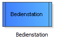

Bedienstation konfigurieren
Bei den meisten Stationen kann konfiguriert werden, wie die Verarbeitung der
Kunden an diesen erfolgen soll. Bei einer Bedienstation kann z.B. eingestellt
werden, wie lange die Bedienungen dauern sollen, und bei einer Kundenquelle
kann eingestellt, werden wie viele Kunden und mit welchen Abständen und welchen
Typs in ihr generiert werden sollen.
Nach der Konfiguration der Quelle muss nun die Bedienstation
konfiguriert werden. (Der Ausgang besitzt keine weiteren Einstellungen.)
Der Konfigurationsdialog eines Elements wird Doppelklick auf das Element geöffnet.
Im Bedienstation-Konfigurationsdialog besteht aus mehreren Rubriken:
- Bedienzeiten:
Stellen Sie hier in ähnlicher Weise wie bei der Quelle
eine exponentiell verteilte mittlere Bediendauer von 80 Sekunden ein.
Zeitbasis (Sekunden) und die Erfassung der Prozesszeiten als Bedienzeiten können unverändert beibehalten werden.
- Rüstzeiten:
Zwischen der Bedienung von Kunden unterschiedlicher Typen werden teilweise Rüstzeiten benötigt.
In diesem Beispiel sollen diese Rüstzeiten jedoch deaktiviert bleiben.
- Nachbearbeitungszeiten:
Nach der Bedienung eines Kunden kann eine Nachbearbeitungszeit notwendig sein, bevor der Bediener
wieder verfügbar ist.
In diesem Beispiel sollen die Nachbearbeitungszeiten jedoch deaktiviert bleiben.
- Wartezeittoleranzen:
Wenn ein Kunde zu lange warten muss, kann es vorkommen, dass dieser das Warten aufgibt
(weil seine Wartezeittoleranz überschritten wurde).
In diesem Beispiel soll die Verwendung von Wartezeittoleranzen jedoch deaktiviert bleiben.
- Prioritäten und Batchgrößen:
Auf dieser Seite kann eingestellt werden, nach welcher Strategie Kunden aus der Warteschlange entnommen werden
sollen und ob Batch-Bedienungen erfolgen sollen. Die Bedienreihenfolge "w" bedeutet eine Priorisierung der Kunden
nach Wartezeit, d.h. es wird eine FIFO-Warteschlange verwendet.
In diesem Beispiel sollen der Wert "w" für die Prioritätsbestimmung der Kunden und eine Batch-Größe von 1 beibehalten werden.
- Bediener:
Auf dieser Seite kann eingestellt werden, wie viele Bediener welcher Typen zur Bedienung eines Kunden benötigt
werden. Klicken Sie auf "Notwendige Bedienergruppe hinzufügen" und bestätigen Sie
den Dialog mit "Ok", um eine Gruppe bestehend aus einem Bediener zu erzeugen und als notwenige Bedienergruppe
hinzuzufügen.
- Kosten:
Auf dieser Seite können optional Kosten für die Bedienungen eingestellt werden.
Konkrete Schritte:
- Klicken Sie doppelt auf die Bedienstation:

- Klicken Sie auf der Seite "Bedienzeiten" über dem Verteilungsdiagramm rechts auf "Bearbeiten" und
wählen Sie im Verteilungseditor 80 (Sekunden) als mittlere Bedienzeit.
- Klicken Sie auf der Seite "Bediener" auf "Notwendige Bedienergruppe hinzufügen" und bestätigen Sie den Dialog mit "Ok".